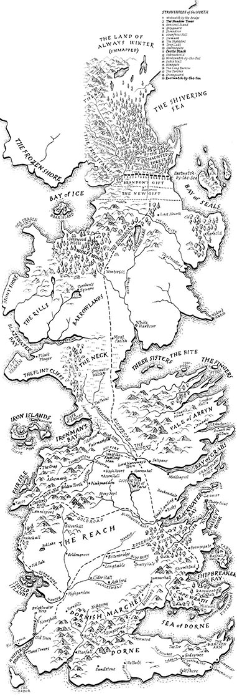

Game Of Thrones song
Map of Westeros
Over time, seven relatively stable feudal kingdoms were forged across Westeros, although their territories fluctuated over the next few thousand years through constant warfare, and no kingdom remained dominant for long:
-
The Kingdom of the North
- ruled by House Stark of Winterfell
-
The Kingdom of the Isles and the Rivers
- ruled by House Hoare of Harrenhal
-
The Kingdom of the Rock
- ruled by House Lannister of Casterly Rock
-
The Storm Kingdom
- ruled by House Durrandon of Storm's End
-
The Kingdom of Mountain and Vale
- ruled by House Arryn of the Eyrie
-
The Kingdom of the Reach
- ruled by House Gardener of Highgarden
-
The Principality of Dorne
- ruled by House Martell of Sunspear
History
Background
Prior to Aegon's Conquest, seven large sovereign kingdoms existed on the continent; the Kingdom of the North, the Kingdom of the Mountain and Vale, the Kingdom of the Isles and Rivers, the Kingdom of the Rock, the Kingdom of the Reach, the Kingdom of the Stormlands, and the Principality of Dorne. To the north of the Seven Kingdoms laid the Wall, manned by the Night's Watch, and beyond the Wall; the lawless lands inhabited by the wildlings. Dragonstone and it's surrounding islands remained independent, ruled by House Targaryen, the last of the dragonlords following the Doom of Valyria.
Aegon's Conquest
After being spurned by King Argilac Durrandon of the Stormlands, Lord Aegon Targaryen and his sister-wives launched a campaign to conquer the continent. Utilising the overwhelming firepower of their three dragons, the Targaryens soon conquered six of the Seven Kingdoms, although Dorne under House Martell refused to surrender and managed to avoid formal conquest. Despite House Targaryen claiming rule over the entire continent south of the Wall, Dorne remained de-facto independent for nearly two centuries after the Conquest. Only during the rule of King Daeron II Targaryen, was Dorne brought peacefully into the realm through a series of negotiations and marriage pacts.
Targaryen era
Out of the swords of his fallen enemies, Aegon Targaryen constructed the Iron Throne. He also built a new castle, the Red Keep, at the mouth of the Blackwater Rush, where his forces had initially landed during the Conquest. A city grew around the castle, aptly named King's Landing. Around a century and three decades after the Conquest, the Seven Kingdoms were devastated by a catastrophic war of succession between King Aegon II Targaryen and his supporters, and Queen Rhaenyra Targaryen and her supporters. The war proved indecisive, and resulted in the last of House Targaryen's dragons dying off within a generation, significantly weakening House Targaryen. House Targaryen entered further decline with the beginning of the Blackfyre Rebellions, after King Aegon IV Targaryen legitimised Daemon Waters on his deathbed. Furthermore, the Targaryen practice of incestuous marriages resulted in many children of such unions succumbing to madness later in life.
Robert's Rebellion
After nearly three centuries on the Iron Throne, House Targaryen was deposed and supplanted by House Baratheon during Robert's Rebellion, with it's last remnants going into exile in the Free Cities of Essos.
War of the Five Kings
Following the death of King Robert Baratheon, the realm fractured once again in a war of succession. During the conflict, the North and the Iron Islands attempted to break away as independent states, but as the Great War loomed, both abandoned their pursuits of independence and aligned behind Queen Daenerys Targaryen, who had since returned from exile in Essos.
Great War
The White Walkers, having previously been defeated thousands of years prior and relegated to myth and legend, broke through the Wall and invaded the Seven Kingdoms. They were eventually defeated for good during the Battle of King's Landing by a coalition of the living, lead by Daenerys Targaryen and Jon Snow.
Baratheon era
Both Daenerys and Jon perished during the Great War, leaving the son of Robert Baratheon and Daenerys's designated heir, Gendry Baratheon, to inherit the rule of the Seven Kingdoms in their absence. With the White Walkers defeated, the Wall was abandoned and the Free Folk under Tormund Giantsbane accepted the suzerainty of House Stark of the North, thus in effect extending the Seven Kingdoms to encompass the entire continent. Ten years later, the conclusion of the War of the Narrow Sea led to the Stepstones being annexed into the Seven Kingdoms, although they are not formally a part of any kingdom, instead being ruled by the quasi-military force, the Stepstones Guard.